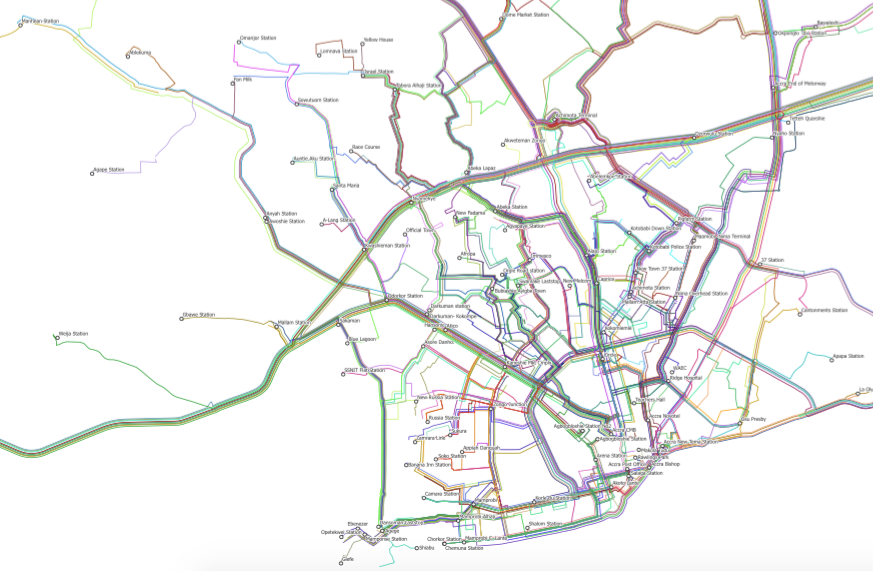

The Itinerum™ platform was developed as part of a research project conducted by Zachary Patterson from the Department of Geography, Planning & Environment at Concordia University in Montreal. The original purpose of the Itinerum™ smart phone application (previously DataMobile) was to collect travel behaviour data from Concordia University students, faculty and staff. The application records locational information on user trips through their smartphone.
A pilot project with the entire Concordia community took place from 10 November - 5 December 2014. Close to 900 people participated in the survey. The DataMobile project, as well as results from the November-December 2014 survey, are described in the paper "DataMobile: A Smartphone Travel Survey Experiment" will also be published in 2016 in the Transportation Research Record.
If you would like to test it, see your own data that DataMobile collects, or if you would be interested in using DataMobile for a project of your own, please contact Zachary Patterson (zachary dot patterson [at] concordia dot ca.
MTL Trajet was a large-scale (more than 10,000 downloads) travel survey conducted with the City of Montreal in November and December 2016. Check back for details on the results of this study in early winter 2017. For more information on this study, refer to the City's web page here.
CFSMobile is the application used as the GPS Component of the 5-city Canada Food Study run by Prof. Dave Hammond at the University of Waterloo. CFSMobile was used as part of this study in November and December 2016 in Vancouver, Edmonton, Toronto, Montreal and Halifax. Visit the Canada Food Study website for more information.
This project with the Accra Municipal Assembly Department of Transport (DOT) and the Agence française de développement (AFD) used AccraMobile to map bus (Trotro) routes in Ghana's capital city, Accra. This map (below) was unveiled by the Honourable Mayor Vanderpuije of Accra on December 9th, 2015 in Accra.

The unveiling of this map took place at the Workshop on Mobile Technologies for Smart Transportation Planning in Accra.
Here's the presentation by Zachary Patterson and Alex Johnson given at the workshop.
The first stage of this project, as well as results, are described in the paper "Mapping Accra's Jitney Network with Smartphones: The AccraMobile Experiment" was presented at the 2016 Annual Meeting of the Transportation Research Board in Washington, DC. This will take place in Session 601 Tuesday (January 12 ,2016) from 1:30 PM- 3:15 PM, Convention Center, 150B. This paper will also be published in the Transportation Research Record.
The second phase of the AccraMobile project has involved conversion of data from Phase 1 into GTFS format and the production of a map designed for Trotro users. This weekend, the Accra Municipal Assembly in conjunction with AFD, MEST and the Concordia TRIP Lab hosted hackathon. You can download the new map here.
You can download our latest paper analyzing variance in route itineraries here. It will be presented at the 2017 Annual Meeting of the TRB. This will take place in Session 673 Tuesday (January 11, 2017) from 1:30 PM- 3:15 PM, Convention Center, 144A. This paper will also be published in the Transportation Research Record.
2017 has seen the use of Itinerum in several innovative studies looking at different aspects of the transportation system as part of the Itinerum Partnership. Those studies are were with: